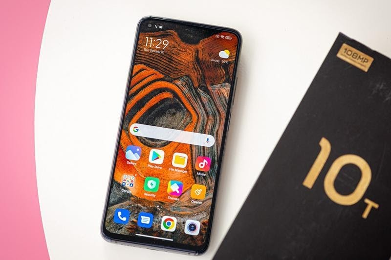
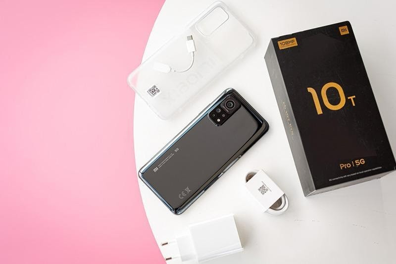
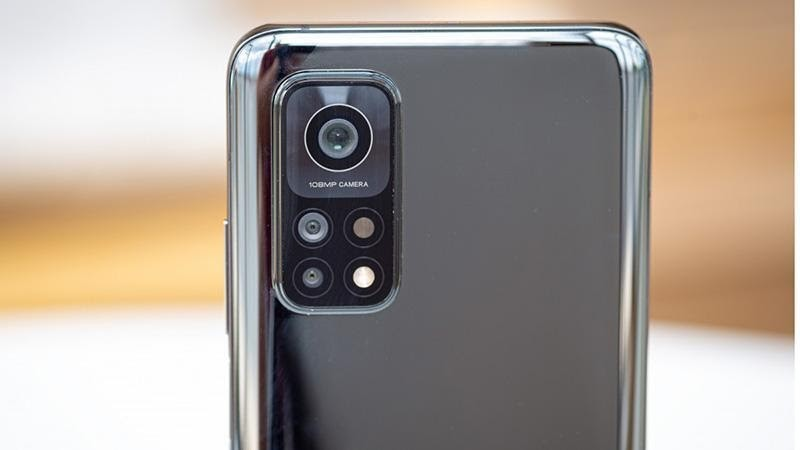
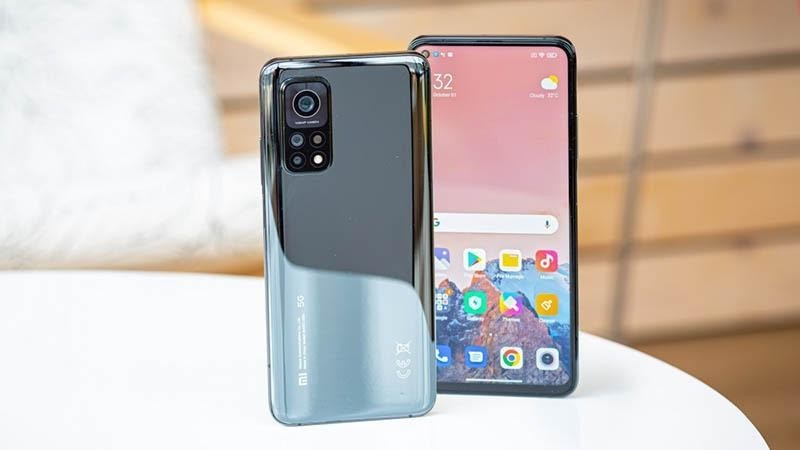

Màn hình:
IPS LCD6.67"Full HD+
Hệ điều hành:
Android 10
Camera sau:
Chính 108 MP & Phụ 13 MP, 5 MP
Camera trước:
20 MP
Chip:
Snapdragon 865
RAM:
8 GB
Bộ nhớ trong:
128-256GB
SIM:
2 Nano SIM, Hỗ trợ 5G
Pin, Sạc:
5000 mAh, 33 W
Cho dù dòng sản phẩm Xiaomi Mi Series đã trải qua rất nhiều thế hệ cũng rất nhiều sản phẩm, thế nhưng có thể thấy Mi 10T Pro 5G chính là chiếc điện thoại toàn diện nhất từ trước đến nay. Xiaomi Mi 10T Pro 5G chắc chắn sẽ là một siêu phẩm cấu hình có mức giá ấn tượng nhất của Xiaomi được ra mắt trong năm 2020.
Mi 10T Pro 5G được Xiaomi thiết kế theo dạng nguyên khối cực kì sang trọng và cầm trên tay mang lại một cảm giác cực kì cao cấp. Việc cả mặt lưng và mặt trước được hoàn thiện từ kinh cường lực Corning Gorilla Glass 5 mang tới cho thiết bị độ bền bỉ cao cũng như trải nghiệm cầm nắm đầm tay. Xiaomi cung cấp cho Mi 10T Pro ba phiên bản màu sắc đó là Cosmic Black (Đen Vũ Trụ), Lunar Silver (Bạc Ánh Trăng) và Aurora Blue (Xanh Cực Quang). Với việc sở hữu tới 3 biến thể màu sắc sẽ giúp cho người dùng dễ dàng lựa chọn được máy theo như sở thích cá nhân, cá tính và độ tuổi của bản thân
Xiaomi cũng trang bị cho Mi 10T Pro 5G một màn hình với kích thước lớn lên tới 6.67 inch trên tấm nền IPS LCD cho ra hình ảnh với màu sắc chân thực cùng với góc nhìn siêu rộng. Thêm nữa, độ phân giải của máy cũng đạt mức Full HD+ 1080 x 2400px, hỗ trợ công nghệ HDR 10+ cùng với mật độ điểm ảnh lên tới 395 ppi, tần số quét cao 144Hz, cho khả năng hiển thị sắc nét và mượt mà tới từng cú chạm lướt.
Xiaomi Mi 10T Pro 5G sở hữu một cấu hình phần cứng có thể nói là mạnh bậc nhất ở thời điểm hiện tại. Máy được tối ưu bộ nhớ, vi xử lý cùng khả năng xử lý đồ họa nhằm mang tới cho người dùng trải nghiệm tối đa với Snapdragon 865 8 nhân sản xuất trên tiến trình 7nm+, xung nhịp tối đa lên tới 2.84GHz. Đi cùng với bộ vi xử lý mạnh mẽ là thanh RAM 8GB cùng với bộ nhớ trong chuẩn UFS 3.1 cho tốc độ truy xuất dữ liệu siêu cao. Máy được cài đặt sẵn giao diện MIUI 12 được tùy biến trên nền hệ điều hành Android 10.
Với cấu hình mạnh mẽ như trên, người dùng có thể thoải mái xử lý các tác vụ với thời gian được rút ngắn lại. Thanh RAM 8GB sẽ giúp cho việc đa nhiệm giờ đây trở nên cực kì đơn giản, giúp giải quyết công việc tốt hơn, chơi game, giải trí và xem phim hiệu quả hơn. Với bộ vi xử lý Snapdragon 865, máy cho phép người dùng có thể “gánh” được tốt những tựa game online phổ biến hiện nay như Liên quân Mobile, Liên minh Tốc Chiến, PUBG Mobile hay Call of Duty Mobile.
Dù chỉ nằm trong phân khúc máy cận cao cấp, thế nhưng Xiaomi Mi 10T Pro 5G vẫn được trang bị một hệ thống camera cực khủng, có thể nói là đỉnh cao bậc nhất trong tầm giá. Cụ thể, máy bao gồm một camera chính độ phân giải 108MP, khẩu độ f/1.7; camera góc siêu rộng khẩu độ và cuối cùng là camera macro khẩu độ. Ngoài ra, máy còn có vô vàn những tính năng thú vị khác như chụp HDR, làm đẹp bằng AI, chụp ảnh chuyên nghiệp, chụp toàn cảnh Panorama, hỗ trợ quay video 8K@30fps, 4K@30/60fps, 1080p@30/60/120fps, chống rung EIS kỹ thuật số.
Camera selfie của máy được đặt trong phần đục lỗ ở phía mặt trước với độ phân giải 20MP, khẩu độ f/2.2, hỗ trợ quay video với độ phân giải 1080p@30fps và 720p@120fps.
Cung cấp năng lượng cho Xiaomi Mi 10T Pro 5G là viên pin dung lượng 5000mAh, hỗ trợ công nghệ sạc nhanh với công suất 33W, giúp sạc từ 0 lên tới 100% chỉ mất 1 giờ đồng hồ. Với viên pin dung lượng lớn cùng công nghệ sạc nhanh siêu tốc, máy sẽ đảm bảo cho người dùng có được thời gian sử dụng dài hơi mà không lo bị gián đoạn những trải nghiệm thường ngày.

Về khả năng bảo mật, Xiaomi Mi 10T Pro 5G được trang bị cảm biến vân
tay vật lý ở cạnh bên cùng khả năng nhận diện khuôn mặt qua camera
selfie ở phía trước. Với 2 cách bảo mật sinh trắc học phổ biến này,
người dùng sẽ hoàn toàn yên tâm khi dữ liệu và thông tin cá nhân của
mình sẽ luôn được bảo vệ một cách toàn diện nhất.
Đặt mua
Xiaomi Mi 10T Pro 5G giá rẻ, chính hãng tại
https://hoanghamobile.com/".
Khách hàng có thể tham khảo thêm những sản phẩm khác của Xiaomi qua
website
https://hoanghamobile.com/dien-thoai-di-dong/xiaomi